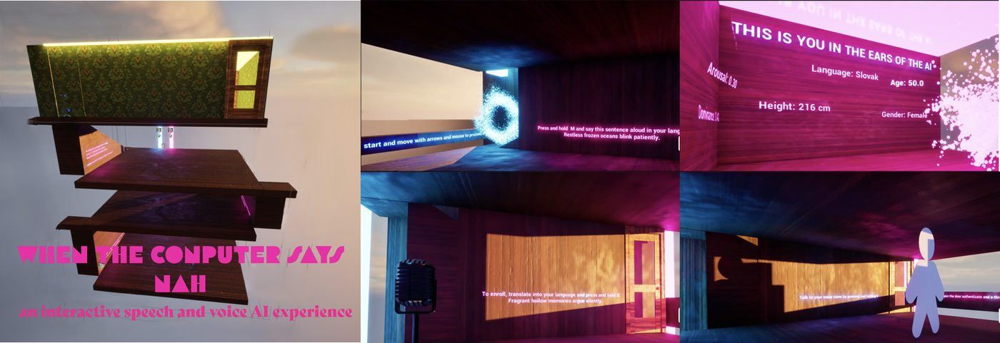
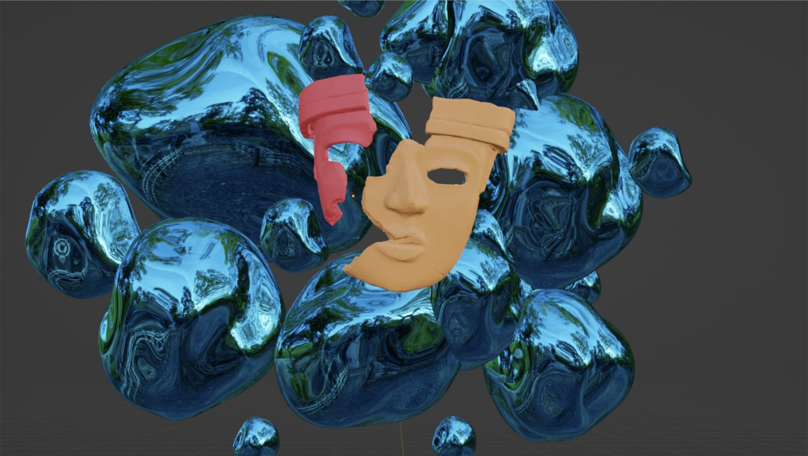

An interactive voice-AI experience built in Unreal Engine 5, where visitors move through a multi-floor virtual house using only their voice as a key. Along the way, participants enroll and authenticate their voice, meet a synthetic clone of themselves, and are profiled by the system — with those speaking accents or non-standard English deliberately meeting more friction. Drawing on the theatrical idea of estrangement, the piece uses these moments of discomfort to make voice authentication, cloning, and profiling viscerally tangible, prompting reflection on security, identity, and whose voice a system is built to recognize.

A browser-based application using face and voice recognition, developed as technical backend lead. In a digitally driven society, individuals can create virtual twins to navigate the metaverse, but the price is surrendering their biometric data. As society craves order and balance, a scoring system determines an individual's daily risk level based on facial expression and voice, impacting their digital twin's life. In this high-stakes world, hope lies in the promise of a better tomorrow.